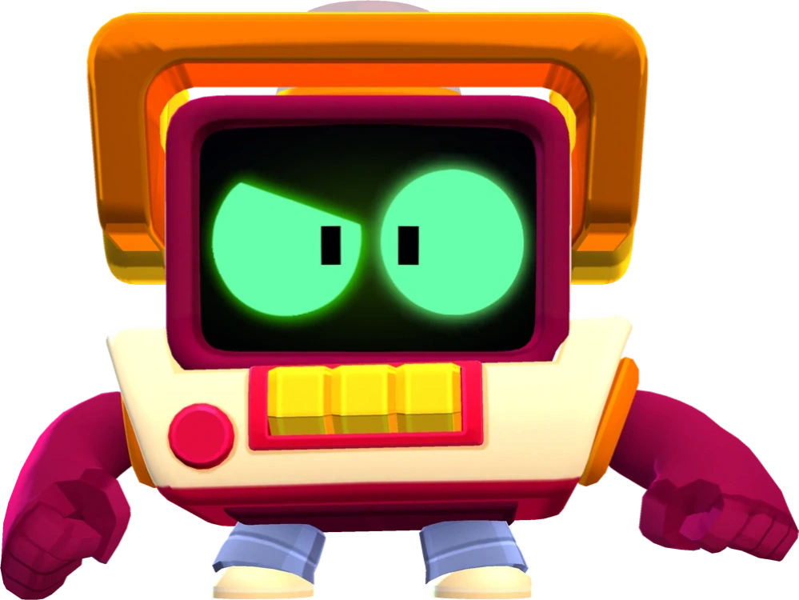

¿Quién es R-T?
La función principal de R-T es ser un puesto de información, pero también es el encargado de controlar toda la actividad que se lleve a cabo en Starr Park. Por razones de seguridad, claro está.
R-T es un Brawler Mítico que se puede desbloquear como recompensa del Brawl Pass en el nivel 30 en la temporada 17: Misterio en Starr Park, o se puede obtener en el Camino Starr. Tiene una salud moderadamente alta, una velocidad de movimiento normal, una producción de daño muy baja y un alcance muy largo en su forma normal. En su forma alternativa, tiene una velocidad de movimiento muy rápida, una gran producción de daño y un alcance corto. La forma normal de R-T ataca disparando una sirena que marca a los enemigos, lo que aumenta todo el daño infligido a ese enemigo. Su Super separa su cabeza de sus piernas estacionarias, transformándose en su forma alternativa. La forma alternativa de R-T ataca con su señal, infligiendo daño instantáneamente en un área circular alrededor de él y sus piernas, que también marca a los enemigos para infligir daño adicional. El Super de su forma alternativa se teletransporta y lo transforma de nuevo en la forma normal de R-T, curándolo en el proceso.
|  |
NIVEL DE FUERZA 11 |
Sus gadgets
 |
SIN COBERTURA: Carga al instante el súper de R-T |
 |
CUENTA ATRÁS: Detona al momento todas las marcas activas que tengan los brawlers enemigos y les inflige daño. |
Sus habilidades estelares
 |
ÁLGEBRA: Las marcas creadas duran 3 segundos más. |
 |
GRABACIÓN: R-T y sus piernas reciben un 20% menos de daño cuando están separados. |
 Braian Arancibia
Braian Arancibia Aya El Baarar
Aya El Baarar